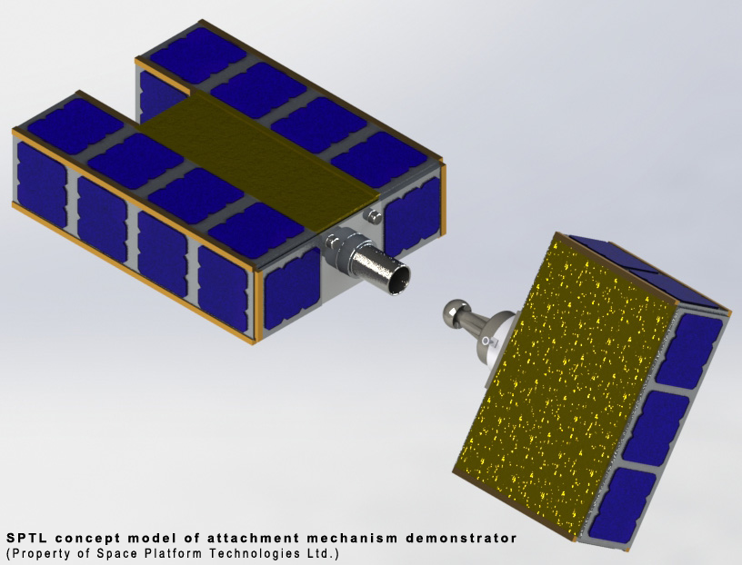

Services
Satellite orbit insertion, de-orbit and related services
Orbit Insertion and De-Orbit Service
The spacecraft for capturing satellites in low Earth orbit has a common bus for different missions, thus reducing manufacturing costs and time. The spacecraft is also easy to modify for several purposes – insertion into parking orbit, deorbit or orbit re-positioning of satellite.
The cost effective and on-demand availability of this spacecraft will allow constellation operators to extend life of their satellites and allow removal from the constellation upon failure.
More details to be made available soon.
Demonstrator Mission
The demonstrator mission is designed to test and validate the concept and technologies currently under development. Two 3U sized satellites will be used, to demonstrate this capability.
More details to be made available soon.